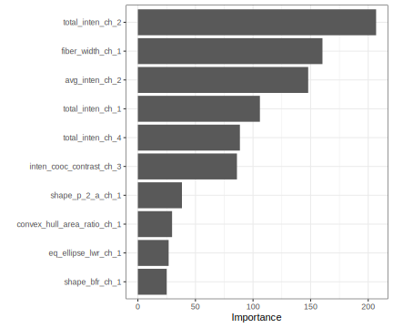

Some model parameters cannot be learned directly from a data set during model training; these kinds of parameters are called hyperparameters. Some examples of hyperparameters include the number of predictors that are sampled at splits in a tree-based model (we call this mtry in tidymodels) or the learning rate in a boosted tree model (we call this learn_rate). Instead of learning these kinds of hyperparameters during model training, we can estimate the best values for these values by training many models on resampled data sets and exploring how well all these models perform. This process is called tuning.
Predicting image segmentation, but better
In our article on resampling, we introduced a data set of images of cells that were labeled by experts as well-segmented (WS) or poorly segmented (PS). We trained a random forest model to predict which images are segmented well vs. poorly, so that a biologist could filter out poorly segmented cell images in their analysis. We used resampling to estimate the performance of our model on this data.
data(cells, package = "modeldata")
cells
#> # A tibble: 2,019 x 58
#> case class angle_ch_1 area_ch_1 avg_inten_ch_1 avg_inten_ch_2 avg_inten_ch_3
#> <fct> <fct> <dbl> <int> <dbl> <dbl> <dbl>
#> 1 Test PS 143. 185 15.7 4.95 9.55
#> 2 Train PS 134. 819 31.9 207. 69.9
#> 3 Train WS 107. 431 28.0 116. 63.9
#> 4 Train PS 69.2 298 19.5 102. 28.2
#> 5 Test PS 2.89 285 24.3 112. 20.5
#> 6 Test WS 40.7 172 326. 654. 129.
#> 7 Test WS 174. 177 260. 596. 124.
#> 8 Test PS 180. 251 18.3 5.73 17.2
#> 9 Test WS 18.9 495 16.1 89.5 13.7
#> 10 Test WS 153. 384 17.7 89.9 20.4
#> # … with 2,009 more rows, and 51 more variables: avg_inten_ch_4 <dbl>,
#> # convex_hull_area_ratio_ch_1 <dbl>, convex_hull_perim_ratio_ch_1 <dbl>,
#> # diff_inten_density_ch_1 <dbl>, diff_inten_density_ch_3 <dbl>,
#> # diff_inten_density_ch_4 <dbl>, entropy_inten_ch_1 <dbl>,
#> # entropy_inten_ch_3 <dbl>, entropy_inten_ch_4 <dbl>,
#> # eq_circ_diam_ch_1 <dbl>, eq_ellipse_lwr_ch_1 <dbl>,
#> # eq_ellipse_oblate_vol_ch_1 <dbl>, eq_ellipse_prolate_vol_ch_1 <dbl>,
#> # eq_sphere_area_ch_1 <dbl>, eq_sphere_vol_ch_1 <dbl>,
#> # fiber_align_2_ch_3 <dbl>, fiber_align_2_ch_4 <dbl>,
#> # fiber_length_ch_1 <dbl>, fiber_width_ch_1 <dbl>, inten_cooc_asm_ch_3 <dbl>,
#> # inten_cooc_asm_ch_4 <dbl>, inten_cooc_contrast_ch_3 <dbl>,
#> # inten_cooc_contrast_ch_4 <dbl>, inten_cooc_entropy_ch_3 <dbl>,
#> # inten_cooc_entropy_ch_4 <dbl>, inten_cooc_max_ch_3 <dbl>,
#> # inten_cooc_max_ch_4 <dbl>, kurt_inten_ch_1 <dbl>, kurt_inten_ch_3 <dbl>,
#> # kurt_inten_ch_4 <dbl>, length_ch_1 <dbl>, neighbor_avg_dist_ch_1 <dbl>,
#> # neighbor_min_dist_ch_1 <dbl>, neighbor_var_dist_ch_1 <dbl>,
#> # perim_ch_1 <dbl>, shape_bfr_ch_1 <dbl>, shape_lwr_ch_1 <dbl>,
#> # shape_p_2_a_ch_1 <dbl>, skew_inten_ch_1 <dbl>, skew_inten_ch_3 <dbl>,
#> # skew_inten_ch_4 <dbl>, spot_fiber_count_ch_3 <int>,
#> # spot_fiber_count_ch_4 <dbl>, total_inten_ch_1 <int>,
#> # total_inten_ch_2 <dbl>, total_inten_ch_3 <int>, total_inten_ch_4 <int>,
#> # var_inten_ch_1 <dbl>, var_inten_ch_3 <dbl>, var_inten_ch_4 <dbl>,
#> # width_ch_1 <dbl>
Random forest models typically perform well with defaults, but the accuracy of some other kinds of models, such as boosted tree models or decision tree models, can be sensitive to the values of hyperparameters. In this article we will train a decision tree model. There are several hyperparameters for decision tree models that can be tuned for better performance. Let’s explore:
- the complexity parameter (which we call
cost_complexity in tidymodels) for the tree, and
- the maximum
tree_depth.
Before we start the tuning process, we split our data into training and testing sets, just like when we trained the model with one default set of hyperparameters. We can use strata = class if we want our training and testing sets to be created using stratified sampling so that both have the same proportion of both kinds of segmentation.
library(tidymodels)
set.seed(123)
cell_split <- initial_split(cells %>% select(-case), strata = class)
cell_train <- training(cell_split)
cell_test <- testing(cell_split)
We use the training data for tuning the model.
Tuning hyperparameters
To tune the decision tree hyperparameters cost_complexity and tree_depth, we create a model specification that identifies which model parameters we will tune().
tune_spec <-
decision_tree(
cost_complexity = tune(),
tree_depth = tune()
) %>%
set_engine("rpart") %>%
set_mode("classification")
tune_spec
#> Decision Tree Model Specification (classification)
#>
#> Main Arguments:
#> cost_complexity = tune()
#> tree_depth = tune()
#>
#> Computational engine: rpart
We can’t train this specification on a single data set (such as the entire training set) and learn what the hyperparameter values should be, but we can train many models using resampled data and see which models turn out best. We can create a regular grid of values to try using some convenience functions for each hyperparameter:
tree_grid <- grid_regular(cost_complexity(),
tree_depth(),
levels = 5)
Let’s create cross-validation folds for tuning, and then use tune_grid() to fit models at all the different values we chose for each tuned hyperparameter.
set.seed(234)
cell_folds <- vfold_cv(cell_train)
set.seed(345)
tree_res <- tune_spec %>%
tune_grid(
class ~ .,
resamples = cell_folds,
grid = tree_grid
)
tree_res
#> # 10-fold cross-validation
#> # A tibble: 10 x 4
#> splits id .metrics .notes
#> <list> <chr> <list> <list>
#> 1 <split [1.4K/152]> Fold01 <tibble [50 × 5]> <tibble [0 × 1]>
#> 2 <split [1.4K/152]> Fold02 <tibble [50 × 5]> <tibble [0 × 1]>
#> 3 <split [1.4K/152]> Fold03 <tibble [50 × 5]> <tibble [0 × 1]>
#> 4 <split [1.4K/152]> Fold04 <tibble [50 × 5]> <tibble [0 × 1]>
#> 5 <split [1.4K/152]> Fold05 <tibble [50 × 5]> <tibble [0 × 1]>
#> 6 <split [1.4K/151]> Fold06 <tibble [50 × 5]> <tibble [0 × 1]>
#> 7 <split [1.4K/151]> Fold07 <tibble [50 × 5]> <tibble [0 × 1]>
#> 8 <split [1.4K/151]> Fold08 <tibble [50 × 5]> <tibble [0 × 1]>
#> 9 <split [1.4K/151]> Fold09 <tibble [50 × 5]> <tibble [0 × 1]>
#> 10 <split [1.4K/151]> Fold10 <tibble [50 × 5]> <tibble [0 × 1]>
Once we have our tuning results, we can both explore them through visualization and then select the best result.
tree_res %>%
collect_metrics() %>%
mutate(tree_depth = factor(tree_depth)) %>%
ggplot(aes(cost_complexity, mean, color = tree_depth)) +
geom_line(size = 1.5, alpha = 0.5) +
geom_point() +
facet_wrap(~ .metric, scales = "free", nrow = 2) +
scale_x_log10()

best_tree <- tree_res %>%
select_best("roc_auc")
best_tree
#> # A tibble: 1 x 2
#> cost_complexity tree_depth
#> <dbl> <int>
#> 1 0.0000000001 4
These are the values for tree_depth and cost_complexity that maximize AUC in this data set of cell images. We can update (or “finalize”) our model with these values.
final_mod <- finalize_model(
tune_spec,
best_tree
)
final_mod
#> Decision Tree Model Specification (classification)
#>
#> Main Arguments:
#> cost_complexity = 1e-10
#> tree_depth = 4
#>
#> Computational engine: rpart
Our tuning is done!
Exploring results
Let’s fit this final model to the training data. What does the decision tree look like?
final_tree <- final_mod %>%
fit(class ~ .,
data = cell_train)
final_tree
#> parsnip model object
#>
#> Fit time: 113ms
#> n= 1515
#>
#> node), split, n, loss, yval, (yprob)
#> * denotes terminal node
#>
#> 1) root 1515 540 PS (0.64356436 0.35643564)
#> 2) total_inten_ch_2< 47256.5 731 63 PS (0.91381669 0.08618331)
#> 4) total_inten_ch_2< 37166 585 19 PS (0.96752137 0.03247863) *
#> 5) total_inten_ch_2>=37166 146 44 PS (0.69863014 0.30136986)
#> 10) avg_inten_ch_1< 99.15056 98 14 PS (0.85714286 0.14285714) *
#> 11) avg_inten_ch_1>=99.15056 48 18 WS (0.37500000 0.62500000)
#> 22) fiber_align_2_ch_3>=1.47949 20 8 PS (0.60000000 0.40000000) *
#> 23) fiber_align_2_ch_3< 1.47949 28 6 WS (0.21428571 0.78571429) *
#> 3) total_inten_ch_2>=47256.5 784 307 WS (0.39158163 0.60841837)
#> 6) fiber_width_ch_1< 11.19756 329 137 PS (0.58358663 0.41641337)
#> 12) avg_inten_ch_1< 194.4183 254 82 PS (0.67716535 0.32283465) *
#> 13) avg_inten_ch_1>=194.4183 75 20 WS (0.26666667 0.73333333)
#> 26) total_inten_ch_3>=62458.5 23 9 PS (0.60869565 0.39130435) *
#> 27) total_inten_ch_3< 62458.5 52 6 WS (0.11538462 0.88461538) *
#> 7) fiber_width_ch_1>=11.19756 455 115 WS (0.25274725 0.74725275)
#> 14) shape_p_2_a_ch_1>=1.225676 300 97 WS (0.32333333 0.67666667)
#> 28) avg_inten_ch_2>=362.0108 55 23 PS (0.58181818 0.41818182) *
#> 29) avg_inten_ch_2< 362.0108 245 65 WS (0.26530612 0.73469388) *
#> 15) shape_p_2_a_ch_1< 1.225676 155 18 WS (0.11612903 0.88387097) *
We can also visualize the decision tree using the partykit package.
library(partykit)
tree_party <- as.party(final_tree$fit) ## currently broken
plot(tree_party)
Perhaps we would also like to understand what variables are important in this final model. We can use the vip package to estimate variable importance.
library(vip)
#>
#> Attaching package: 'vip'
#> The following object is masked from 'package:utils':
#>
#> vi
final_tree %>%
vip(geom = "point")

These are the automated image analysis measurements that are the most important in driving segmentation quality predictions.
Finally, let’s return to our test data and estimate the model performance we expect to see on new data. We can use the function last_fit() with our finalized model; this function fits the finalized model on the training data and evaluates the finalized model on the testing data.
final_mod %>%
last_fit(class ~ .,
cell_split) %>%
collect_metrics
#> # A tibble: 2 x 3
#> .metric .estimator .estimate
#> <chr> <chr> <dbl>
#> 1 accuracy binary 0.802
#> 2 roc_auc binary 0.860
The performance metrics from the test set indicate that we did not overfit during our tuning procedure.